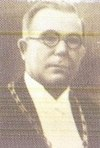

Kota Malang (diucapkan [malaŋ], kiwalan: ngalam) adalah sebuah kota yang terletak di Provinsi Jawa Timur, Indonesia,[5] kota terbesar kedua di Jawa Timur[6] setelah Surabaya, dan kota terbesar ke-12 di Indonesia. Kota ini didirikan pada masa Kerajaan Kanjuruhan dan terletak di dataran tinggi seluas 145,28 km2[7] yang terletak di tengah-tengah Kabupaten Malang.[8] Bersama dengan Kota Batu dan Kabupaten Malang, Kota Malang merupakan bagian dari kesatuan wilayah yang dikenal dengan Malang Raya.
Kota Malang dikenal baik sebagai kota pendidikan. Kota ini memiliki berbagai perguruan tinggi terbaik seperti Universitas Brawijaya, Universitas Negeri Malang, UIN Maulana Malik Ibrahim Malang, dan Politeknik Negeri Malang. Selain itu, kota ini merupakan kota pariwisata karena alamnya yang menawan yang dikelilingi oleh pegunungan serta udaranya yang sejuk. Malang pun terkenal sebagai kota bunga karena banyaknya bunga yang menghiasi kota. Kota Malang juga merupakan kota seni karena banyaknya kesenian khas dari kota ini, mulai dari tarian hingga pertunjukan.
Kota Malang memiliki berbagai macam orang dari berbagai macam suku bangsa dan budaya. Penduduk kota Malang mencapai 895.387 jiwa dengan suku mayoritas Jawa, diikuti dengan Madura. Wilayah Metropolitan Malang (Malang Raya) merupakan kawasan metropolitan terbesar kedua di Jawa Timur setelah Gerbangkertosusila. Jika dilihat dari sisi budaya, Kota Malang termasuk ke dalam Kawasan Kebudayaan Arek.
Kota Malang menyimpan berbagai macam peninggalan bersejarah. Kota ini menyimpan peninggalan masa Kerajaan Kanjuruhan hingga Belanda.[18] Peninggalan Belanda pada umumnya berupa bangunan-bangunan kuno seperti Gereja Kayutangan yang berarsitektur gotik.[19] Malang pun mengadakan berbagai acara untuk melestarikan cagar budayanya, salah satunya seperti Festival Malang Tempo Doeloe. Malang pun memiliki banyak peninggalan sejarah yang menjadi markah tanah seperti Tugu Malang (Alun-Alun Bundar).
Daftar Wali Kota
| No. | Foto Wali Kota | Nama | Tahun Menjabat | Periode |
|---|---|---|---|---|
| 1 |  |
H I Bussemaker | 1919 - 1929 | 1 |
| 2 |  |
Ir. Voorneman | 1929 - 1933 | 2 |
| 3 |  | Ir. Lakemar | 1933 - 1936 | 3 |